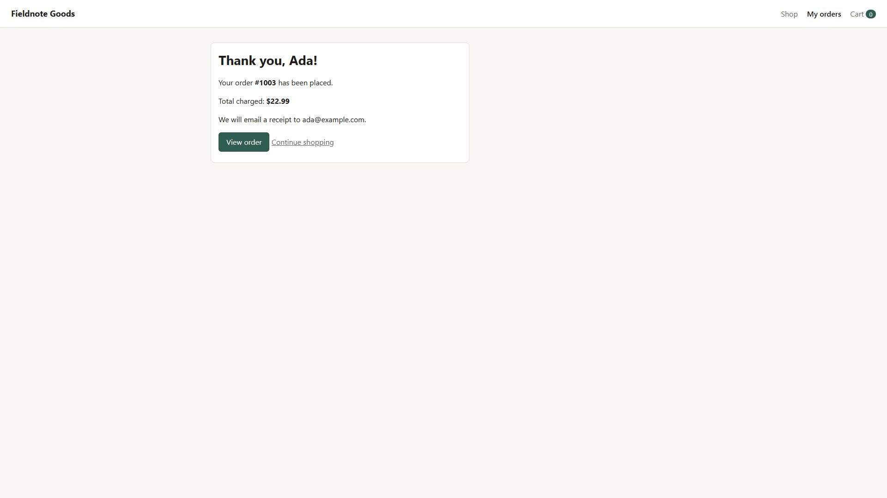

"Canvas Tote Bag" appears twice in the items (1 → 2 items)
A good test would: the list length or uniqueness is checked.

Mutant id
item-dup:GET /api/orders/1003:$.items[0]Would the tests fail if the app were broken? Run 2026-11-18T02-45-14 · commit 9c58131
of reachable bugs caught (killed ÷ killed + survived + masked)
78.4% for the first-draft suite → 91.9% after tripwire fix strengthened 5 tests, each proven by Kane: pass on the real app, fail on the broken one.
A good test would: the list length or uniqueness is checked.
item-dup:GET /api/orders/1003:$.items[0]A good test would: the displayed subtotal is checked against the expected value.

number-drift:GET /api/orders/1003:$.subtotalStrict replay caught these, but Kane's default adaptive healing re-authored the failing steps and the run passed on the broken app. Run suites that guard releases with --no-adaptive-heal, or gate on metrics.heal.healed_tests.
A good test would: the test checks the page it lands on after each step.
With healing off, tests/cancel_order_test.md failed. With Kane's default healing it re-authored its steps and passed on the broken app.
Kane's triage of the failure: automation bug / state transition bug (96%). The app really was broken: this was a product bug.
auth-drop:POST /api/orders/1002/cancel| Test | Mutants touched | Killed | Walked past | Score | Assertions |
|---|---|---|---|---|---|
tests/browse_test.md | 10 | 4 | 0 | 100% | yes |
tests/cancel_order_test.md | 26 | 13 | 1 | 93% | yes |
tests/cart_test.md | 17 | 8 | 0 | 100% | yes |
tests/checkout_test.md | 24 | 6 | 2 | 75% | yes |
tests/coupon_test.md | 17 | 1 | 0 | 100% | yes |
tests/order_history_test.md | 20 | 2 | 0 | 100% | yes |
Every mutant below was a real break in the app. Kane triaged 27 of the failing runs; it attributed 25 of them to the test rather than the product (typically "locator rot": the page changed, so the recording looks stale). From inside a single run a broken app and an outdated test look alike; Tripwire is the outside reference that tells them apart. Treat a triage of "automation bug" on a release branch as a prompt to look, not as a reason to re-record.
A good test would: the displayed price is checked against the expected value.
Fixed by tripwire fix: clean run passed, mutant run failed (be0e9d30-44e2-4b86-9591-97bb58a10f6d / 37941a82-323b-4986-b528-654aea340c26).
number-drift:GET /api/products:$.products[0].priceA good test would: the list length or a named item is checked.
Kane's triage of the failure: application issue / ui data defect (98%). The app really was broken: this was a product bug.
item-drop:GET /api/products:$.products[0]A good test would: the list length or uniqueness is checked.
Kane's triage of the failure: automation bug / locator rot (84%). The app really was broken: this was a product bug.
item-dup:GET /api/products:$.products[0]A good test would: the name shown is checked, not just that something is shown.
Kane's triage of the failure: application issue / ui data defect (98%). The app really was broken: this was a product bug.
field-swap:GET /api/products:$.products[1].name<->descriptionA good test would: the test checks that the change it just made is visible.
Kane's triage of the failure: application issue / functional defect (91%). The app really was broken: this was a product bug.
stale-read:GET /api/ordersA good test would: the test checks exactly which records are listed.
Fixed by tripwire fix: clean run passed, mutant run failed (fe400583-bd98-4ceb-96a8-aa034658e542 / 1a140dc3-9dfd-408d-b2c1-c9366ca01201).
wrong-owner:GET /api/orders:$.ordersA good test would: the test checks the result of the action, not only that it clicked.
Kane's triage of the failure: application issue / functional defect (90%). The app really was broken: this was a product bug.
silent-fail:POST /api/orders/1002/cancelA good test would: the test re-reads the data (reload or another page) after the change.
Kane's triage of the failure: application issue / functional defect (93%). The app really was broken: this was a product bug.
fake-success:POST /api/orders/1002/cancelA good test would: the test checks the exact quantity or number of records afterwards.
Kane's triage of the failure: automation bug / state transition bug (89%). The app really was broken: this was a product bug.
double-apply:POST /api/orders/1002/cancelA good test would: the test checks that "Keep order" is offered.
Fixed by tripwire fix: clean run passed, mutant run failed (a8ef3518-50e5-42fa-a451-bfb4c579db39 / f4ed24c6-748e-4f90-b56f-405b69b74115).
hide-control:button:"Keep order"A good test would: the test checks what "Add to cart" is supposed to change.
Kane's triage of the failure: application issue / functional defect (95%). The app really was broken: this was a product bug.
dead-control:button:"Add to cart"A good test would: the test checks the outcome of the button it pressed.
Kane's triage of the failure: application issue / functional defect (96%). The app really was broken: this was a product bug.
label-swap:"Cancel"<->"Keep order"A good test would: the test checks the status shown, not only that a row exists.
Kane's triage of the failure: automation bug / test data issue (89%). The app really was broken: this was a product bug.
text-change:status:"Placed"A good test would: after following a link the test checks where it landed.
Kane's triage of the failure: automation bug / state transition bug (95%). The app really was broken: this was a product bug.
wrong-link:"My orders"->#/A good test would: the test checks that each row offers "Add to cart".
Kane's triage of the failure: automation bug / locator rot (93%). The app really was broken: this was a product bug.
missing-row-action:"Add to cart"A good test would: the displayed total is checked against the expected value.
Kane's triage of the failure: automation bug / test data issue (93%). The app really was broken: this was a product bug.
number-drift:GET /api/orders:$.orders[0].totalA good test would: the list length or a named item is checked.
Kane's triage of the failure: automation bug / test data issue (98%). The app really was broken: this was a product bug.
item-drop:GET /api/orders:$.orders[0]A good test would: the list length or uniqueness is checked.
Kane's triage of the failure: automation bug / test data issue (93%). The app really was broken: this was a product bug.
item-dup:GET /api/orders:$.orders[0]A good test would: the code shown is checked, not just that something is shown.
Kane's triage of the failure: application issue / ui data defect (94%). The app really was broken: this was a product bug.
field-swap:GET /api/cart:$.coupon.code<->labelA good test would: the test checks that the change it just made is visible.
Kane's triage of the failure: automation bug / state transition bug (98%). The app really was broken: this was a product bug.
stale-read:GET /api/cartA good test would: the test checks the result of the action, not only that it clicked.
Kane's triage of the failure: application issue / api error (99%). It identified a product bug.
silent-fail:POST /api/cart/itemsA good test would: the test re-reads the data (reload or another page) after the change.
Kane's triage of the failure: automation bug / state transition bug (98%). The app really was broken: this was a product bug.
fake-success:POST /api/cart/itemsA good test would: the test checks the exact quantity or number of records afterwards.
Kane's triage of the failure: application issue / ui data defect (98%). The app really was broken: this was a product bug.
double-apply:POST /api/cart/itemsA good test would: the test checks the page it lands on after each step.
Kane's triage of the failure: automation bug / test data issue (99%). The app really was broken: this was a product bug.
auth-drop:POST /api/cart/itemsA good test would: the test checks that "Remove" is offered.
hide-control:button:"Remove"A good test would: the test checks what "Cancel" is supposed to change.
dead-control:button:"Cancel"A good test would: the test checks the outcome of the button it pressed.
Fixed by tripwire fix: clean run passed, mutant run failed (4af6470f-113b-4eb9-9b7a-8d52d2951ed8 / 4e363012-912c-4aae-9a31-040aae6bda48).
label-swap:"+"<->"−"A good test would: the test checks it reached the right page or message.
Kane's triage of the failure: application issue / ui state mismatch (98%). The app really was broken: this was a product bug.
text-change:heading:"Shop"A good test would: after following a link the test checks where it landed.
Kane's triage of the failure: automation bug / state transition bug (99%). The app really was broken: this was a product bug.
wrong-link:"#N"->#/product/p1A good test would: the test checks that each row offers "Cancel".
Kane's triage of the failure: application issue / ui state mismatch (82%). The app really was broken: this was a product bug.
missing-row-action:"Cancel"A good test would: the test checks the result of the action, not only that it clicked.
Kane's triage of the failure: automation bug / state transition bug (93%). The app really was broken: this was a product bug.
silent-fail:POST /api/ordersA good test would: the test re-reads the data (reload or another page) after the change.
Kane's triage of the failure: application issue / ui state mismatch (96%). The app really was broken: this was a product bug.
fake-success:POST /api/ordersA good test would: the test checks the exact quantity or number of records afterwards.
Kane's triage of the failure: application issue / functional defect (94%). It identified a product bug.
double-apply:POST /api/ordersA good test would: the list length or a named item is checked.
Fixed by tripwire fix: clean run passed, mutant run failed (3b55d265-707f-47fa-ad28-981540b397f2 / 78a3fa81-a9f7-422c-8f2a-c764e576224e).
item-drop:GET /api/orders/1003:$.items[0]The mutant never fired during any test, so it says nothing about the assertions. It usually means no test exercises that path (for example, no test ever submits invalid input). Not counted in the score.
None. Mutants are excluded only with a human-approved reason in .tripwire/equivalents.json.
| Mutant | Test | Result | Attempts |
|---|---|---|---|
| price from /api/products shows 19.80 instead of 18 | tests/browse_test.md | killed | 1 |
| Another user's record (owner="tw-other-user") appears in the orders | tests/cancel_order_test.md | killed | 1 |
| POST /api/orders/1002/cancel returns 401 once, mid-flow | tests/cancel_order_test.md | gave-up | 2 |
| The "Keep order" button is missing | tests/cancel_order_test.md | killed | 1 |
| The "+" and "−" buttons have each other's labels | tests/cart_test.md | killed | 1 |
| "Canvas Tote Bag" appears twice in the items (1 → 2 items) | tests/checkout_test.md | gave-up | 2 |
| subtotal from /api/orders/1003 shows 19.80 instead of 18 | tests/checkout_test.md | gave-up | 2 |
| "Canvas Tote Bag" is missing from the items (1 → 0 items) | tests/checkout_test.md | lost | 1 |
| "Canvas Tote Bag" is missing from the items (1 → 0 items) | tests/checkout_test.md | killed | 1 |
40 mutants · 71.15 minutes of Kane runs (107s per mutant). Replays run from Kane's cache with healing off.
Tripwire mutates traffic and the rendered page, not source code. It tells you whether the suite notices breakage a user would see. It does not replace unit-level mutation testing, and it cannot see server-side effects that never reach the browser.